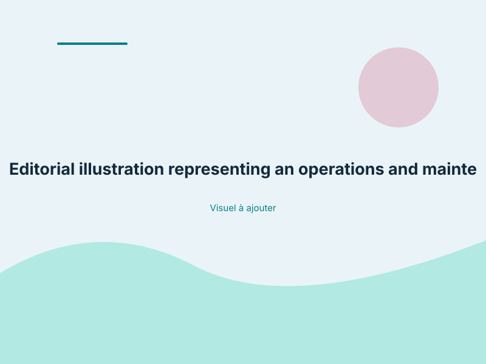

Technical translation · Operations and maintenance
Canadian French translation of a 21,931-word operations and maintenance manual for the TSC 900 automatic transfer switch controller.
The assignment involved translating the PM151 Operations and Maintenance Manual for the TSC 900 automatic transfer switch controller.
The documented material covers hardware components, operator interfaces, communication connections and automatic backup-generator controls. The translation needed to convey the technical information precisely and keep operating instructions clear and unambiguous for the people using the equipment.

Editorial illustration representing technical documentation.
Delivering technical clarity to ensure accurate, unambiguous operation of sensitive electrical equipment.
Keep the functions of the Graphical HMI Controller (GHC) distinct from those of the Switch Control Unit (SCU).
Render electrical switching sequences, telemetry instructions and power-transition procedures in clear, unambiguous Canadian French.
Use stable terminology for hardware components, interfaces, connections and controller functions throughout the manual.
It must distinguish system components and describe operating procedures clearly enough to support accurate use.